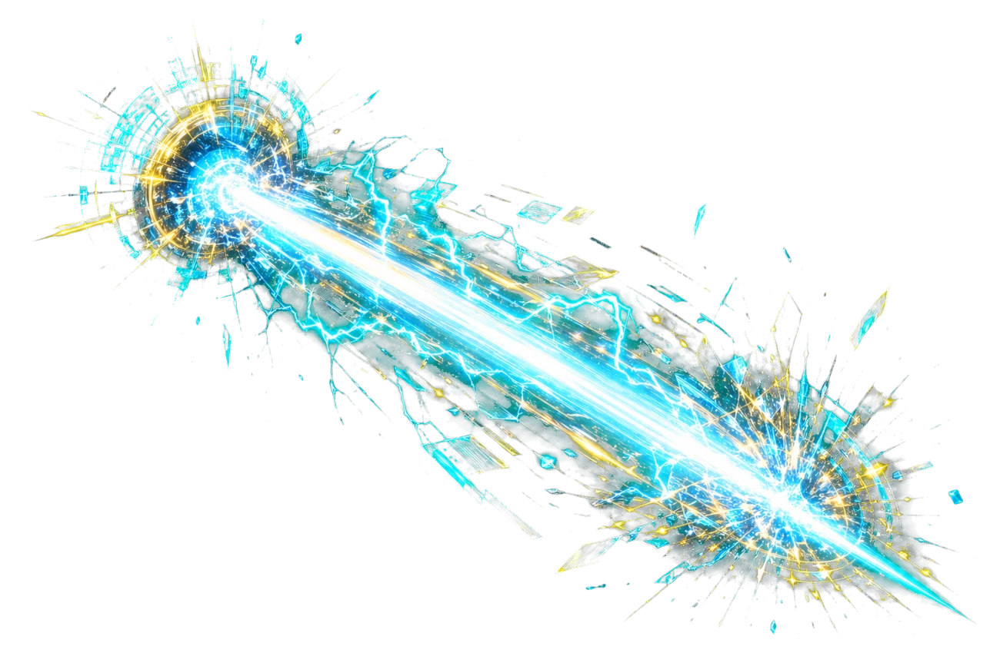

Mr. Mac's ArcadeBoss Rush Arena
Immersive Master Review
Boss Rush Arena
Pick a course, unit, or full review campaign. Correct answers deal damage. Misses break your shield. Every battle becomes targeted studying.
Boss Integrity
100%
Player Shield
100%
Combo
x0
Run Status
Boss 1
Phase One

Knowledge Titan
Content cluster
Run Complete
Victory
Summary appears here.